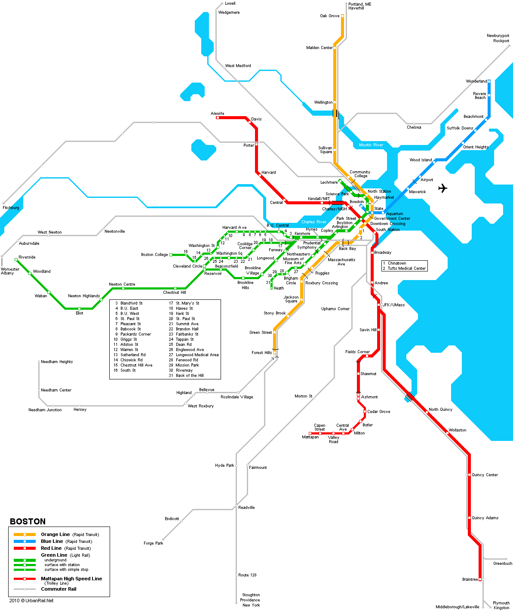
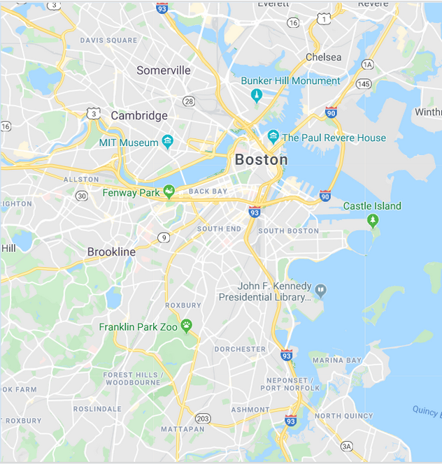

Maps are:
Neither true nor false
Limited in their accuracy
Partial representations
Useful for only some uses
A reflection of the interests of the designer
Scientific models are:
Neither true nor false
Limited in their accuracy
Partial representations
Useful for only some uses
A reflection of the interests of the designer